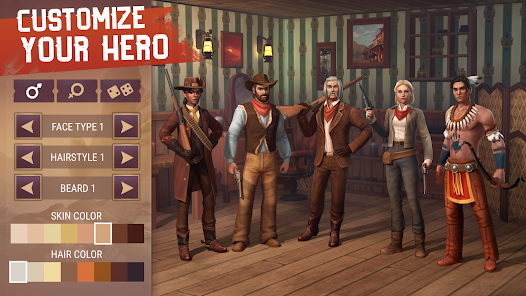

<!DOCTYPE html>
<html lang="en">
<head>
  <meta charset="UTF-8" />
  <meta name="viewport" content="width=device-width, initial-scale=1.0"/>
  <title>🔥 Top 10 Survival Games Like Last Day on Earth (Android – 2025)</title>
  
  <!-- SEO Meta Tags -->
  <meta name="description" content="Discover the top 10 survival games like Last Day on Earth for Android in 2025. Explore detailed reviews, game sizes, offline/online modes, and download links for the best survival experiences.">
  <meta name="keywords" content="Survival games like Last Day on Earth, best survival games 2025, Android survival games, offline survival games, zombie survival games, multiplayer survival games, top 10 survival games">
  <meta name="author" content="Top10Verse">
  <meta name="robots" content="index, follow">
  <meta name="googlebot" content="index, follow">
  <meta name="rating" content="general">
  <meta name="language" content="en">

  <!-- Open Graph (Facebook / LinkedIn) -->
  <meta property="og:type" content="article">
  <meta property="og:title" content="Top 10 Survival Games Like Last Day on Earth (Android – 2025)">
  <meta property="og:description" content="Discover the best games like Last Day on Earth for Android in 2025. Includes game reviews, features, and download links for ultimate survival gaming.">
  <meta property="og:url" content="https://www.top10verse.xyz/survival-games-like-last-day-on-earth.html">
  <meta property="og:image" content="https://www.top10verse.xyz/images/post6/cover.webp">
  <meta property="og:site_name" content="Top10Verse">

  <!-- Twitter Card -->
  <meta name="twitter:card" content="summary_large_image">
  <meta name="twitter:title" content="Top 10 Survival Games Like Last Day on Earth (Android – 2025)">
  <meta name="twitter:description" content="Discover the best survival games like Last Day on Earth for Android in 2025. Read reviews, check game sizes, and get download links.">
  <meta name="twitter:image" content="https://www.top10verse.xyz/images/post6/cover.webp">

  <!-- JSON-LD Structured Data for SEO -->
  <script type="application/ld+json">
  {
    "@context": "https://schema.org",
    "@type": "Article",
    "headline": "Top 10 Survival Games Like Last Day on Earth (Android – 2025)",
    "description": "Explore the top 10 survival games like Last Day on Earth for Android in 2025 with detailed reviews, offline/online info, game sizes, and download links.",
    "author": {
      "@type": "Organization",
      "name": "Top10Verse"
    },
    "publisher": {
      "@type": "Organization",
      "name": "Top10Verse",
      "logo": {
        "@type": "ImageObject",
        "url": "https://www.top10verse.xyz/logo.png"
      }
    },
    "image": "https://www.top10verse.xyz/images/post6/cover.webp",
    "datePublished": "2025-09-15",
    "dateModified": "2025-09-15",
    "mainEntityOfPage": {
      "@type": "WebPage",
      "@id": "https://www.top10verse.xyz/survival-games-like-last-day-on-earth.html"
    }
  }
  </script>

  <style>
    body {
      font-family: 'Segoe UI', sans-serif;
      margin: 0;
      padding: 0;
      background: #ffffff;
      color: #222;
      line-height: 1.6;
    }

    header {
      background: #111;
      color: #fff;
      padding: 20px 10px;
      text-align: center;
    }
 footer {
      text-align: center;
      padding: 20px;
      background: #f1f1f1;
      font-size: 14px;
      color: #333;
    }
    .navbar {
      background-color: #333;
      padding: 10px 20px;
      display: flex;
      justify-content: space-between;
      align-items: center;
      flex-wrap: wrap;
      position: relative;
    }
    .navbar .logo {
      font-size: 24px;
      color: #fff;
      font-weight: bold;
    }
    .navbar nav {
      display: flex;
      gap: 15px;
    }
    .navbar nav a {
      color: #fff;
      text-decoration: none;
      padding: 8px 12px;
      transition: background 0.3s;
    }
    .navbar nav a:hover {
      background-color: #444;
      border-radius: 5px;
    }
    .dropdown { position: relative; display: inline-block; }
    .dropdown-content {
      display: none;
      position: absolute;
      background-color: #333;
      min-width: 160px;
      z-index: 1;
    }
    .dropdown-content a {
      color: #fff;
      padding: 12px 16px;
      text-decoration: none;
      display: block;
    }
    .dropdown-content a:hover { background-color: #444; }
    .dropdown:hover .dropdown-content { display: block; }

    /* Hamburger Button */
    .hamburger {
      display: none;
      flex-direction: column;
      cursor: pointer;
      gap: 4px;
    }
    .hamburger div {
      width: 25px;
      height: 3px;
      background: #fff;
      border-radius: 2px;
    }
    .mobile-nav {
      display: none;
      flex-direction: column;
      width: 100%;
      background: #333;
    }
    .mobile-nav a {
      padding: 10px 20px;
      border-top: 1px solid #444;
      color: #fff;
      text-decoration: none;
    }
    .mobile-nav a:hover { background: #444; }

    .main-container {
      display: flex;
      flex-direction: column;
      padding: 20px;
      max-width: 1200px;
      margin: 0 auto;
    }

    .content { flex: 3; }

    .sidebar {
      flex: 1;
      background-color: #f9f9f9;
      padding: 20px;
      margin-top: 20px;
      border-left: 1px solid #ccc;
    }

    .sidebar h2 {
      font-size: 18px;
      margin-bottom: 10px;
      color: #333;
    }

    .sidebar ul { list-style: none; padding-left: 0; }
    .sidebar ul li { margin: 8px 0; }
    .sidebar ul li a { text-decoration: none; color: #007bff; transition: color 0.3s; }
    .sidebar ul li a:hover { color: #0056b3; }

    .game-block {
      border-bottom: 1px solid #ddd;
      padding: 20px 0;
      display: flex;
      flex-direction: column;
      gap: 10px;
    }
    .game-block img {
      width: 100%;
      height: auto;
      border-radius: 8px;
    }
    .game-block h2 {
      margin: 10px 0 5px;
      color: #007bff;
      font-size: 20px;
    }
    .meta { font-size: 14px; color: #555; }
    .description { font-size: 15px; }

    .download-btn {
      display: inline-block;
      margin-top: 10px;
      background: #007bff;
      color: #fff;
      padding: 8px 14px;
      text-decoration: none;
      border-radius: 5px;
    }
    .download-btn:hover { background: #0056b3; }

    footer {
      text-align: center;
      padding: 20px;
      background: #f1f1f1;
      font-size: 14px;
      color: #333;
    }

    @media (min-width: 900px) {
      .main-container { flex-direction: row; gap: 20px; }
      .sidebar { margin-top: 0; }
      .game-block { flex-direction: row; align-items: flex-start; }
      .game-block img {
        width: 300px;
        height: 170px;
        object-fit: cover;
        flex-shrink: 0;
      }
      .game-details { padding-left: 20px; }
    }

    @media (max-width: 768px) {
      .container { flex-direction: column; }
      .content { grid-template-columns: 1fr; }
      .sidebar { width: 100%; }
      .navbar nav { display: none; }
      .hamburger { display: flex; }
      .mobile-nav.active { display: flex; }
    }
  </style>
</head>

<body>
  <!-- The rest of your HTML content remains the same (header, navbar, game blocks, sidebar, footer) -->
</body>
</html>


  <header>
    <h1>🔥 Top 10 Survival Games Like Last Day on Earth (Android – 2025)</h1>
    <div class="navbar">
      <div class="logo">Top10Verse</div>
      <div class="hamburger" onclick="document.querySelector('.mobile-nav').classList.toggle('active')">
        <div></div><div></div><div></div>
      </div>
      <nav>
         <a href="https://www.top10verse.xyz/index.html">Home</a>
        <a href="https://www.top10verse.xyz/Games.html">Games</a>
        <a href="https://www.top10verse.xyz/apps.html">Apps</a>
        <a href="https://www.top10verse.xyz/Tech.html">Tech</a>
        
        <a href="https://www.top10verse.xyz/Health.html">Health</a>
        
      </nav>
    </div>
    <div class="mobile-nav">
       <a href="https://www.top10verse.xyz/index.html">Home</a>
        <a href="https://www.top10verse.xyz/Games.html">Games</a>
        <a href="https://www.top10verse.xyz/apps.html">Apps</a>
        <a href="https://www.top10verse.xyz/Tech.html">Tech</a>
        
        <a href="https://www.top10verse.xyz/Health.html">Health</a>
        
    </div>
    <p>Explore top 10s across games, gadgets, apps, and more</p>
  </header>

  <div class="main-container">
    <div class="content">
      <!-- Game blocks go here (Game 1 to Game 10) -->
      <!-- Copy all your existing game-blocks here -->
      <!-- Example below: -->
     <div class="main-container">
  <div class="content">

    <!-- Game 1 -->
    <div class="game-block">
      
      <div class="game-details">
        <h2>1. Dawn of Zombies: Survival After the Last War</h2>
        <p class="meta">Size: 450 MB | Offline: Partial | Multiplayer: Yes</p>
        <p class="description">
          If you loved <strong>Last Day on Earth</strong>, then Dawn of Zombies is the perfect game to start with. This is one of the most popular survival RPGs on Android, offering a vast post-apocalyptic world full of mutated creatures, bandits, and dangerous anomalies. Your main goal is to explore, scavenge resources, build your shelter, and stay alive as long as possible. Unlike many survival games, DoZ includes a rich storyline with multiple quests, NPC interactions, and a progression system that keeps you hooked for hours. 

          The crafting system is incredibly detailed — from making weapons and armor to building advanced workbenches. You can explore radioactive zones for rare loot, sneak into enemy camps, or take part in PvP battles with other players. The graphics are stunning, especially for a mobile game, with dynamic lighting and weather that make the wasteland feel alive.

          One thing that sets Dawn of Zombies apart is its focus on <em>both single-player and multiplayer modes</em>. You can enjoy the story campaign solo, or head into co-op zones to raid bosses with friends. It also has an energy system, but it’s fairly generous and doesn’t feel too pay-to-win.

          If you want a game that mixes exploration, base-building, and combat in a gritty world — this is a must-try. <strong>Download Dawn of Zombies today and prove you have what it takes to survive the apocalypse.</strong>
        </p>
        <a href="https://play.google.com/store/apps/details?id=com.survival.last&hl=en" class="download-btn" target="_blank">Download Game</a>
      </div>
    </div>

    <!-- Game 2 -->
    <div class="game-block">
      
      <div class="game-details">
        <h2>2. Stormfall: Saga of Survival</h2>
        <p class="meta">Size: 310 MB | Offline: No | Multiplayer: Limited</p>
        <p class="description">
          <strong>Stormfall: Saga of Survival</strong> throws you into a fantasy-themed survival world where magic meets brutality. Instead of a zombie apocalypse, you’re exiled to a cursed land full of dark magic, savage beasts, and ancient ruins waiting to be explored. This game is perfect if you want survival mechanics but with a unique twist — mystical lore and medieval fantasy aesthetics.

          You start with nothing but rags and must craft weapons, armor, and tools to defend yourself. There’s a detailed skill tree where you can unlock new abilities, craft better gear, and master alchemy. Unlike Last Day on Earth, which is mostly about firearms and modern shelters, Stormfall focuses on swords, bows, and magical items. 

          Exploration is a big part of the game — you can travel to forests, caves, and cursed lands, each with different enemies and loot. Combat is satisfying and a little slower-paced than most survival games, which makes it more strategic. There’s also a hunger and thirst mechanic, so you must hunt and cook food to stay alive.

          While the game is online, it’s more PvE-focused than PvP, so you won’t constantly be raided by other players. This makes it perfect for solo players who want to focus on exploration and base-building. 

          If you’re tired of the usual zombie settings, <strong>Stormfall is an excellent alternative with a magical survival experience</strong> that will keep you coming back for more.
        </p>
        <a href="https://play.google.com/store/apps/details?id=com.plarium.survival&hl=en" class="download-btn" target="_blank">Download Game</a>
      </div>
    </div>

    <!-- Game 3 -->
    <div class="game-block">
      
      <div class="game-details">
        <h2>3. Prey Day: Survival</h2>
        <p class="meta">Size: 560 MB | Offline: No | Multiplayer: Yes</p>
        <p class="description">
          If you want a survival game that leans heavily on online multiplayer, <strong>Prey Day</strong> is a must-play. Set in a city devastated by a mysterious infection, this game has a similar feel to Last Day on Earth but is more focused on cooperative play and real-player interactions. 

          Your goal is to scavenge for food, craft gear, and survive against zombies and other players. The game offers safe zones where you can trade with other survivors, join clans, and plan raids. You can explore sewers, hospitals, and military bases, all packed with dangerous enemies and rare loot. 

          What makes Prey Day stand out is its MMO-style elements. You can chat with other players, team up for missions, or even fight them for resources in PvP zones. The crafting system is deep, and there are vehicles you can build to travel faster. 

          If you’re looking for a game where cooperation, betrayal, and competition all mix together, <strong>Prey Day will give you an adrenaline rush</strong>. It’s challenging, but if you love teamwork-based survival, this game is for you.
        </p>
        <a href="https://play.google.com/store/apps/details?id=com.apmbt.lastday&hl=en" class="download-btn" target="_blank">Download Game</a>
      </div>
    </div>

    <!-- Game 4 -->
    <div class="game-block">
      
      <div class="game-details">
        <h2>4. Westland Survival</h2>
        <p class="meta">Size: 420 MB | Offline: Partial | Multiplayer: Limited</p>
        <p class="description">
          <strong>Westland Survival</strong> takes the survival formula and drops you in the Wild West. If you’ve ever wanted to live the life of a cowboy outlaw while surviving in a hostile world, this game is perfect. You’ll build your ranch, craft revolvers and rifles, tame horses, and battle bandits, wolves, and even Native spirits in a beautifully designed open world.

          The game is full of Wild West elements — saloons, shootouts, horse riding, and even gold mining. Crafting plays a huge role, as you’ll need to gather wood, stone, and iron to upgrade your ranch and defend it from raids. Unlike zombie games, here you’ll face human enemies and wildlife, giving the game a fresh feel. 

          Multiplayer features include trading with other players and completing events, but PvP is not as intense as in other games, making it more beginner-friendly. The art style is colorful, and the world feels alive with NPC traders, outlaws, and quests.

          If you want a survival game that feels different from the usual post-apocalyptic setting, <strong>Westland Survival is an amazing choice</strong> that lets you become the sheriff of your own destiny.
        </p>
        <a href="https://play.google.com/store/apps/details?id=com.heliogames.westland&hl=en" class="download-btn" target="_blank">Download Game</a>
      </div>
    </div>

    <!-- Game 5 -->
    <div class="game-block">
      
      <div class="game-details">
        <h2>5. Grim Soul: Dark Survival RPG</h2>
        <p class="meta">Size: 480 MB | Offline: Partial | Multiplayer: Yes</p>
        <p class="description">
          For players who love dark fantasy worlds, <strong>Grim Soul</strong> is one of the most atmospheric survival RPGs available on Android. It feels like Last Day on Earth mixed with Dark Souls. You are thrown into a cursed land plagued by undead, and your task is to build a fortress, craft weapons, and fight for your survival.

          Grim Soul is known for its challenging combat and high difficulty — you’ll face skeletons, knights, and terrifying bosses that require skill to defeat. Crafting is crucial; you’ll need to make armor, potions, and traps to stand a chance. The game also features dungeons that you can raid for rare loot, but be careful — death is punishing here.

          Multiplayer aspects include PvP zones and co-op raids. The gothic visuals, eerie soundtrack, and story-rich quests make this game a must-play for fans of dark survival adventures.

          If you’re looking for a survival game with a serious challenge, <strong>Grim Soul is the ultimate test of your skills and patience</strong>.
        </p>
        <a href="https://play.google.com/store/apps/details?id=fantasy.survival.game.rpg&hl=en" class="download-btn" target="_blank">Download Game</a>
      </div>
    </div>

    <!-- Game 6 -->
    <div class="game-block">
      
      <div class="game-details">
        <h2>6. Days After: Survival Games</h2>
        <p class="meta">Size: 390 MB | Offline: Partial | Multiplayer: Yes</p>
        <p class="description">
          <strong>Days After</strong> is another zombie survival game that fans of Last Day on Earth will love. The gameplay is similar — explore, loot, craft, and build your base — but it offers smoother controls, detailed quests, and a great tutorial system that makes it easy for beginners to learn.

          The story follows your character as they try to survive after a deadly infection has wiped out most of humanity. You’ll hunt animals, plant crops, and fight off zombies that attack your base. One unique feature is the companion system — you can rescue survivors who will help you gather resources and defend your shelter.

          PvP exists but is not as aggressive, so you can enjoy the game at your own pace. The graphics are bright and polished, and the animations feel fluid.

          If you’re new to survival games, <strong>Days After</strong> is a great starting point. It’s beginner-friendly yet deep enough to keep hardcore players entertained for weeks.
        </p>
        <a href="https://play.google.com/store/apps/details?id=com.reliancegames.survival&hl=en" class="download-btn" target="_blank">Download Game</a>
      </div>
    </div>

    <!-- Game 7 -->
    <div class="game-block">
      
      <div class="game-details">
        <h2>7. Mini DayZ 2</h2>
        <p class="meta">Size: 220 MB | Offline: No | Multiplayer: No</p>
        <p class="description">
          <strong>Mini DayZ 2</strong> is a retro-style survival game from Bohemia Interactive, the creators of the PC classic DayZ. It uses pixel graphics but don’t let the simple visuals fool you — this game is brutally hard and addictive.

          You explore procedurally generated maps, scavenge supplies, and fight off zombies while managing hunger, thirst, and temperature. Unlike many mobile survival games, Mini DayZ 2 is more of a roguelike — death means starting over, but each run teaches you something new.

          The game emphasizes exploration and resource management over base-building, making it great for players who want fast-paced survival challenges. You can unlock new characters, weapons, and perks as you progress.

          If you enjoy hardcore survival and don’t mind permadeath mechanics, <strong>Mini DayZ 2 is a must-try</strong>.
        </p>
        <a href="https://play.google.com/store/apps/details?id=com.bistudio.minidayz2&hl=en" class="download-btn" target="_blank">Download Game</a>
      </div>
    </div>

    <!-- Game 8 -->
    <div class="game-block">
      
      <div class="game-details">
        <h2>8. Undawn</h2>
        <p class="meta">Size: 3.5 GB | Offline: No | Multiplayer: Yes</p>
        <p class="description">
          Developed by Tencent and Level Infinite, <strong>Undawn</strong> is one of the most visually stunning survival games on mobile. This is a full-fledged open-world MMO where you can explore massive maps, fight zombies, build bases, and team up with players worldwide.

          The game features AAA-quality graphics, a deep crafting system, and plenty of PvE and PvP activities. You can build and decorate your own house, drive vehicles, and even trade resources with other survivors.

          The combat system is smooth, with various guns, melee weapons, and skills to master. If you have a high-end device, <strong>Undawn</strong> offers one of the most immersive survival experiences available in 2025.
        </p>
        <a href="https://play.google.com/store/apps/details?id=com.levelinfinite.undawn&hl=en" class="download-btn" target="_blank">Download Game</a>
      </div>
    </div>

    <!-- Game 9 -->
    <div class="game-block">
      
      <div class="game-details">
        <h2>9. Survival Simulator</h2>
        <p class="meta">Size: 270 MB | Offline: Yes | Multiplayer: No</p>
        <p class="description">
          <strong>Survival Simulator</strong> is an offline survival game that focuses entirely on crafting, hunting, and surviving in nature. There are no zombies — just you, the forest, and wild animals. 

          You must gather resources, craft tools, and build a shelter to stay alive. Hunting deer, defending against wolves, and collecting food are all part of the experience. It’s a more peaceful game compared to others on this list, but no less challenging.

          Perfect for players who want a true wilderness survival experience without constant online pressure.
        </p>
        <a href="https://play.google.com/store/apps/details?id=com.bewgames.survivalsimulator&hl=en" class="download-btn" target="_blank">Download Game</a>
      </div>
    </div>

    <!-- Game 10 -->
    <div class="game-block">
      
      <div class="game-details">
        <h2>10. No Way To Die: Survival</h2>
        <p class="meta">Size: 380 MB | Offline: Yes | Multiplayer: No</p>
        <p class="description">
          Last but not least, <strong>No Way To Die</strong> is a hidden gem for fans of Last Day on Earth. It features similar mechanics — explore, loot, craft, and defend your base — but with a slightly easier difficulty curve, making it more welcoming to casual players.

          The game has a unique progression system where you unlock new locations gradually, keeping you motivated to keep playing. Combat is satisfying, crafting is straightforward, and you can play completely offline.

          If you’re looking for an LDOE alternative that you can enjoy without worrying about online raids, <strong>No Way To Die is a fantastic option</strong>.
        </p>
        <a href="https://play.google.com/store/apps/details?id=com.openmygame.games.android.wzp&hl=en" class="download-btn" target="_blank">Download Game</a>
      </div>
    </div>

  </div>


  </div>


    </div>
  </aside>
</div>


</body>
</html>

    <aside class="sidebar">
      <h2>Popular Picks</h2>
      <ul>
       <li><a href="Adventure Games Under 200MB.html"><h3>🎮 Top 10 Adventure Games Under 200MB (2025)</h3></a></li>
        <li><a href="offline adventure games.html"><h3>Top 10 Best Offline Android Games Under 100MB You Must Play in 2025</h3></a></li>
        <li><a href="Zombie Survival Games Under 100MB .html"><h3>Top 10 Zombie Survival Games Under 100MB (Android – 2025)</h3></a></li>
        <li><a href="Assassin’s Creed Games Under 10GB.html"><h3>🎮 Top 10 Assassin’s Creed Games Under 10 GB</h3></a></li>
        <li><a href="Adventure Games Under 1GB.html"><h3>Top 10 Action Adventure Games Under 1GB (Android – 2025)</h3></a></li>
      </ul>
    </aside>
  </div>

     <footer style="background-color:#1e1e1e; color:#fff; padding: 40px 20px;">
    <div style="max-width: 1200px; margin: auto; display: flex; flex-wrap: wrap; justify-content: space-between;">
      
      <!-- About Us -->
      <div style="flex: 1; min-width: 250px; margin-bottom: 20px;">
        <h3 style="color: #ffcc00;">About Top10Verse</h3>
        <p style="line-height: 1.6;">
          Top10Verse is your go-to platform for discovering top 10 lists across categories like apps, games, movies, gadgets, careers, and health. We deliver well-researched, humanized content to help you make informed choices quickly and easily.
        </p>
      </div>
  
      <!-- Quick Links -->
      <div style="flex: 1; min-width: 200px; margin-bottom: 20px;">
        <h3 style="color: #ffcc00;">Quick Links</h3>
        <ul style="list-style: none; padding: 0;">
          <li><a href="https://www.top10verse.xyz" style="color: #ccc; text-decoration: none;">Home</a></li>
          <li><a href="https://www.top10verse.xyz/About Us.html" style="color: #ccc; text-decoration: none;">About Us</a></li>
          <li><a href="https://www.top10verse.xyz/Contact Us.html" style="color: #ccc; text-decoration: none;">Contact Us</a></li>
          <li><a href="https://www.top10verse.xyz/Privacy Policy.html" style="color: #ccc; text-decoration: none;">Privacy Policy</a></li>
        </ul>
      </div>
  
      <!-- Contact Info -->
      <div style="flex: 1; min-width: 250px; margin-bottom: 20px;">
        <h3 style="color: #ffcc00;">Contact Us</h3>
        <p>Email: <a href="mailto:mehtabsingh2k7@gmail.com" style="color: #ccc;">mehtabsingh2k7@gmail.com</a></p>
        <p>Location: India</p>
        <p>Available: Mon - Sat, 10AM - 6PM</p>
      </div>
  
      <!-- Social Media -->
      <div style="flex: 1; min-width: 200px; margin-bottom: 20px;">
        <h3 style="color: #ffcc00;">Follow Us</h3>
        <a href="https://www.instagram.com/mehtab_767_/?next=%2Fhghh1152%2F" style="color: #ccc; text-decoration: none; margin-right: 10px;">Instagram</a><br>
      </div>
    </div>
  
    <!-- Copyright -->
    <div style="text-align: center; border-top: 1px solid #444; margin-top: 30px; padding-top: 20px;">
      <p style="color: #aaa;">&copy; 2025 Top10Verse.xyz | All Rights Reserved.</p>
    </div>
  </footer>

</body>
</html>
